PUPUSAS
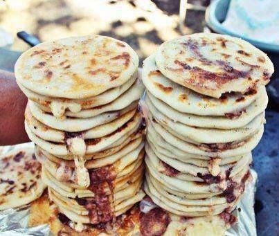
What are they? Pronounced POO-POO-SAHS, my explanation of Pupusas are as follows: (Pardon my language) F***ING DELICIOUS!!!
Wikipedia defines them as: thick griddle cakes or flatbreads made with cornmeal or rice flour. It is usually stuffed with 1 or more ingrediants which may include cheese, certain meats, squash, or refried beans.
History of Pupusas
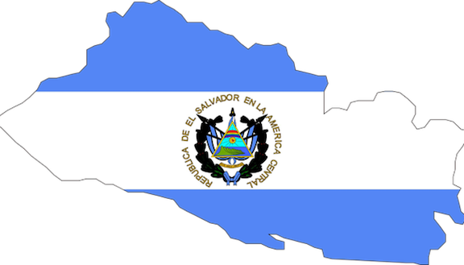
Pupusas originated from El Salvador. They have been linked to the Pipil tribes who inhabited territory in El Salvador. Pupusas are the national dish of El Salvador and there is a specific day dedecated to them. There is a controversy about where pupusas actually originated from as Honduras claims their origin as well but the only thing that matters is that these beautiful babies exist!
My Pupusa Story
My personal relationship with pupusas began when I met my amazing fiancé. She is from LA, California & her parents are from El Salvador & Guatemala. Her mom makes BOMB pupusas & learning from her culture & heritage inspired me to make pupusas on my own! I encourage you to as well! Make this a staple in your household & you will NOT be disappointed dude.
How To Eat Pupusas?
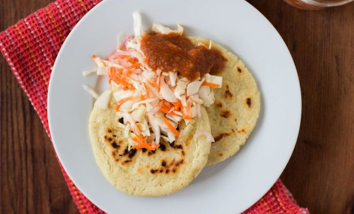
Pupusas are usually eaten by hand & are accompanied with salsa & or curtido. Curtido (cour-tee-doh) is a Hispanic version of "coleslaw". For the inside there is always cheese but can be accompanied with beans, squash, or chicharrón as well. Chicharrón (chee-cha-rrohn) is a type of pork. For authentic pupusas a special quesillo type of cheese or cheese infused with loroco (a type of plant) can be used but I use shredded mozzarella.
How To Make Pupusas!
This is a recipe to make basic cheese pupusas. You can always mix it up & add whatever you want! Just make sure they are really cheesy or they won't be as good!
INGREDIENTS
4 CUPS MASA HARINA (I use MASECA: it is masa flour & can be found in the flour section of Walmart!)
1 TEASPOON SALT
3 CUPS COLD WATER
1 CUP GRATED MOZZERELLA CHEESE
1 TABLESPOON VEGETABLE OIL FOR FRYING
DIRECTIONS
In a large bowl, whisk together the masa harina & salt, then add the water. Use your hands to mix until the dough comes together with a clay-like texture. (I also use a stand mixer if I'm being lazy, you just have to make sure the texture is clay like, it will be sticky but the next step helps with that!
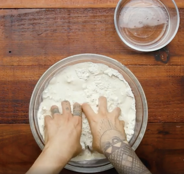
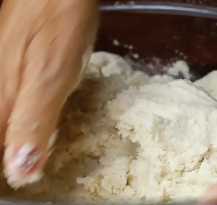
Fill a small bowl with water & a bit of oil & set near your work station. You’ll wet your fingers with the mixture as you work to keep the dough from sticking to your hands.
Take a golf ball-sized portion of dough & roll into a ball, then poke into it with 3 fingers making a little cup. Make sure the thickness is even all the way around.
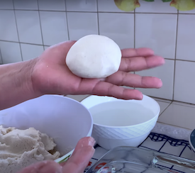
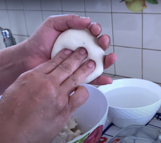
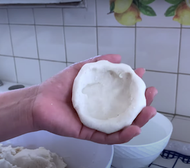
Fill with AS MUCH CHEESE AS POSSIBLE! (I know it might look hard but it is crucial to put a lot of cheese or your pupusas will be dry with no filling. Another tip is to make your dough rounds bigger to fit more cheese. I've made small ones & they were definitely NOT as good.) Remove excess dough from the top as needed & then pat out the ball between your hands until flat. If the pupusa cracks, patch it with a bit of dough & a little oil. Repeat with the remaining ingredients.
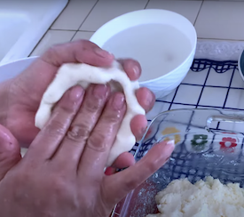
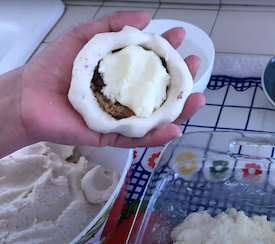
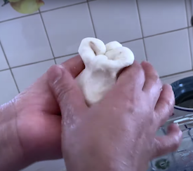
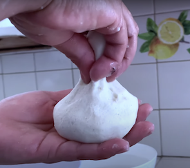
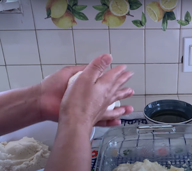
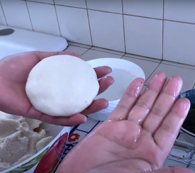
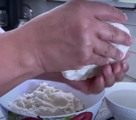
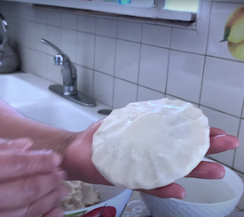
Heat a large pan or griddle over medium heat. Brush with vegetable oil, then place 2-3 pupusas on the pan and cook for 2-4 minutes, or until the bottoms are golden brown. Flip & cook on the other side for 2-4 minutes more, until golden brown & warmed through. Repeat with the remaining pupusas.
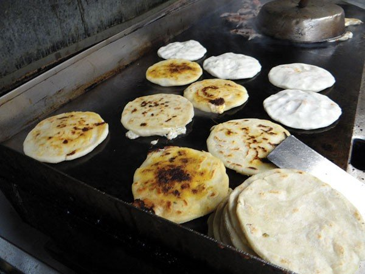
Serve the pupusas with salsa & or curtido and enjoy! (I highly recommend making curtido, it is a spicy cabbage slaw & very easy to make! There might even be a pre-made one somewhere! If you find it let me know!)
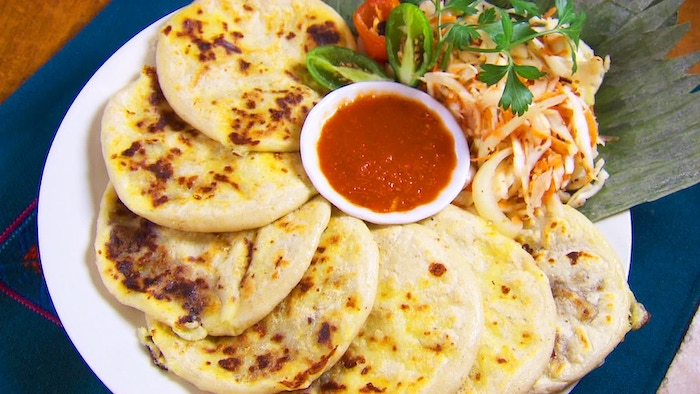